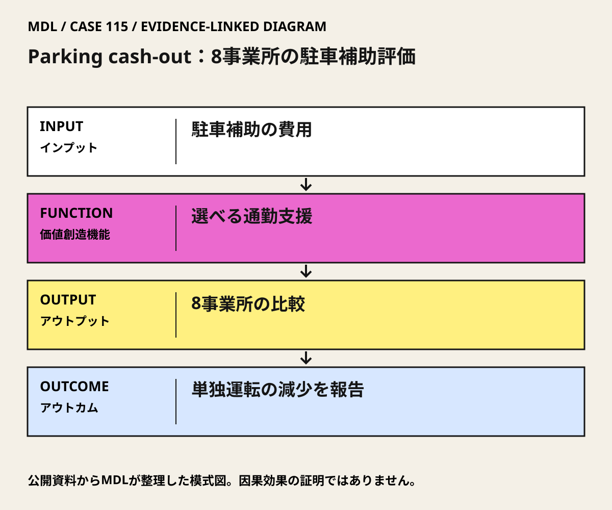

I / INPUT
何を持ち込んでいるか。
活動の出発点となる資源と課題を分けて整理します。「自社」は、その場・制度を運営する組織を指します。
II / VALUE CREATION FUNCTIONS
資源を、どう価値へ変えるか。
以下は既存の8ステップへの編集上の対応づけです。各取り組みの公式な工程名や、全工程を自前で担うことを意味しません。
駐車補助の価値を見える化する
通勤の選択を広げる
行動と補助支出を前後比較する
III / OUTPUT
直接、何が生まれたか。
試作品、データ、契約、標準、育成した人材など、活動から直接生まれたもの。
8事業所の通勤行動・費用を比較した1997年原論文。後年の州議会分析報告も対象と方法を確認。
IV / OUTCOME
その結果、何が変わったか。
実際の利用、行動、業務、事業、地域の変化。報告された変化と、当該活動に帰属できる効果は区別します。
単独運転通勤は17%減、通勤の自動車走行距離は12%減と原論文が報告。LAOの整理では単独運転率は76%から63%で、13ポイント減に相当する。
雇用主の通勤補助支出は、従業員1人当たり月2米ドル増と報告。負担ゼロの施策とみなさない。
公開資料で確認出典 1
PROJECT IN FOCUS / 具体的な事例
Parking cash-out：8事業所の駐車補助評価
確認できた段階：雇用主の通勤補助制度の研究評価 調査確認日 2026-10-06
誰の課題を、どう扱ったか
評価の限界：8事業所の小規模・非無作為の前後比較であり、他要因を完全に除いた因果推計ではない。前後の期間も企業ごとに異なる。数値は1997年研究の対象条件に限る。現在のカリフォルニア法、日本の税制、雇用契約、節税効果の説明に流用しない。
DESIGN BACKWARDS FROM IMPLEMENTATION
社会実装から逆算して、
何を先に整えているか。
実証の先にある導入・運用・継続から、この事例の設計を読み解きます。原典で確認できる仕組みと、MDLの設計解釈・他地域へ応用するための提案を区別して読んでください。「提案」「未実施」と記す内容は、当地で実施済みの工夫ではありません。仕組みの存在と、全案件で成果が出たことも別に扱います。
MORE DETAIL / 運営・根拠・応用
運営の全体像と、学びを深める資料。
費用負担、公表値、応用条件、写真・動画、原典を続けて確認できます。
01どう動かしているのか。
駐車の補助を受け取る以外の選択を従業員へ示し、単独運転を選ぶ金銭条件を変える。事業所別の前後変化をまとめる一方、代替交通や契約条件により反応が異なることを残す。
意思決定と本人の関与：学習上の判断：雇用主の人事・財務責任者が従業員と、駐車補助、現金選択、公共交通等の補助を比較する。法務・税務、就業条件、車が必要な人のアクセスを現在の地域条件で確認してから導入を決める。 Donald Shoupによる制度導入後の研究評価。実施者は各雇用主で、研究者が全8事業所の通勤制度を直接運営した事例ではない。
- 駐車補助の価値を見える化する
- 通勤の選択を広げる
- 行動と補助支出を前後比較する
02誰が負担し、誰が担うか。
各雇用主が通勤補助を支払う。州議会分析機関は大気資源局向け研究と説明するが、研究契約額と個別企業の負担額は本カードでは未確認。
制度やプログラムの財源と、各参加企業・地域に発生する費用は同じではありません。公開範囲を超える案件別予算・契約条件は未確認です。
03確認できたこと。
8事業所の通勤行動・費用を比較した1997年原論文。後年の州議会分析報告も対象と方法を確認。
読み取れる範囲：8事業所の小規模・非無作為の前後比較であり、他要因を完全に除いた因果推計ではない。前後の期間も企業ごとに異なる。数値は1997年研究の対象条件に限る。現在のカリフォルニア法、日本の税制、雇用契約、節税効果の説明に流用しない。
原典で確かめる ↗ 出典の説明 ↓04日本で活かすなら。
日本への学びは法制度の輸入ではなく、駐車補助と他の通勤支援を同じ財布・同じ単位で比較すること。公共交通の乏しい職場や夜間勤務では選べる代替があるかを先に調べる。
05そのまま真似できないこと。
8事業所の小規模・非無作為の前後比較であり、他要因を完全に除いた因果推計ではない。前後の期間も企業ごとに異なる。数値は1997年研究の対象条件に限る。現在のカリフォルニア法、日本の税制、雇用契約、節税効果の説明に流用しない。
06次に、何を確かめるか。
提案・未実施：雇用主の人事・財務を責任者に、従業員代表と現行通勤費を30日で整理し、法務・税務確認と承認後に90日試行を検討。単独運転率、走行距離、補助総額、通勤時間、車が必要な人の負担を指標に、現状維持、現金選択、交通定期補助、相乗り支援を比較。Continue＝選択肢と負担の公平性が改善、Pivot＝勤務条件別の不利益を調整、Stop＝法的条件・安全な通勤・予算が確保できない。
07写真・図と原資料で確かめる。
現場の写真を見る ↑
DIAGRAM: モビリティデザインラボ · 根拠資料 ↗
図の説明
公開資料に基づく模式図。駐車補助の費用 → 選べる通勤支援 → 8事業所の比較 → 単独運転の減少を報告。実景や地理的配置を示さない。
2026-10-06 · MDL作成の説明図。第三者の写真・図面の複製ではありません。
冒頭写真：Century Cityに停車するLADOT Commuter Expressバス
原資料で、当時の調査・実践を読む ↗08原典を読む。
Evaluating the effects of cashing out employer-paid parking: Eight case studies ↗
8事業所・1,694人、単独運転17%減、通勤走行12%減、補助支出月2米ドル／人増
英語・本人の査読原論文の大学登録ページ。書誌・要旨／全文入口。今回の直接表示が不完全で全文接続は未確認。
A Commuter’s Dilemma: Extra Cash or Free Parking ↗
8事業所・1,694人、調査期間の違い、実施方式、単独運転率76%→63%
英語・California LAO公式分析報告。全文PDF・無料
Donald Shoup（UCLA ITSが保存する本人サイト） ↗
本人の駐車費用・制度改革の考え方へ進む原文入口
英語・本人サイト・UCLA保存。本文公開（HTML）。主著の提案紹介であり、書籍全文ではない